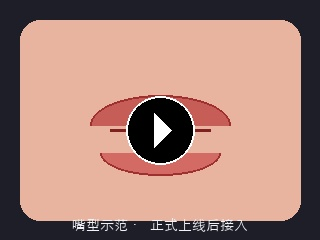

AI
正音
← 返回介绍
01
听这一句
02
跟着读
03
AI纠音
04
放回旋律里唱
当前练习 · 第 1 句 / 共 4 句
LEMONADE
aespa · 韩语
官方 MV · aespa《LEMONADE》
来源：哔哩哔哩 SMTOWN 官方频道
전부 삼켜내
jeon-bu sam-kyeo-nae
▶
原曲演唱
aespa · LEMONADE
选择要练的句子 · 共 4 句
01
先听这一句
从不同角度听清楚这句歌词的发音和演唱方式。
♫
原曲演唱
听歌里真实的这一句
✦
标准发音
去掉旋律，听清楚发音
◐
慢速发音
逐音节慢速，听清每个音
我已听清，开始跟读 →
02
跟着读一句
先不管旋律，只把发音念准。按住按钮开始录音，松开发送。
🎙
按住跟读
按住绿色麦克风，念出「
전부 삼켜내
」
03
看看哪里没读准
AI 将你的发音与标准发音对比，从音节级定位问题，并给出可执行的改进建议。

!
「삼」需要再练一下
收音 ㅁ 要闭唇结束，不要直接带到下一个音。先闭唇完成「m」音，再连接到下一音节。
▶ 听标准发音
↻ 再读一次
发音已练准，放回旋律里唱 →
04
放回旋律里唱
发音已经练准，现在跟着原曲，把这一句真正唱出来。
再听原曲这一句
▶
按住唱
🎤
按住唱
✓
这一句练会了！
继续练下一句，或者去全民K歌把整首歌唱出来。
练下一句 →
🎤 去全民K歌唱整首 →
音频仅在浏览器本地处理，不上传服务器。原曲音频仅用于本次参赛技术演示。